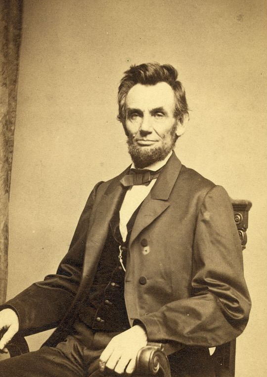
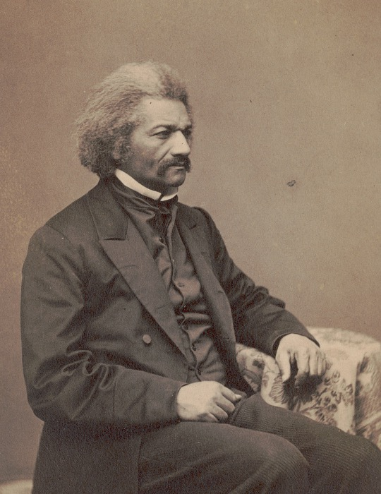
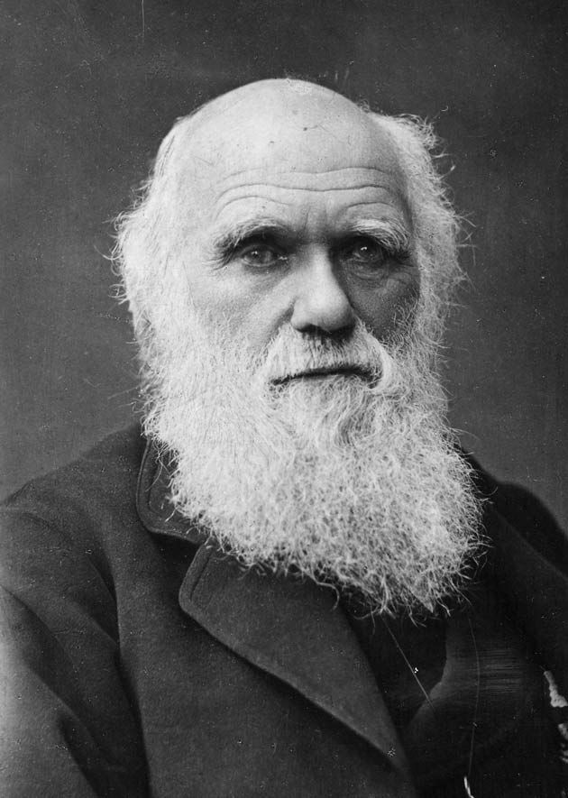
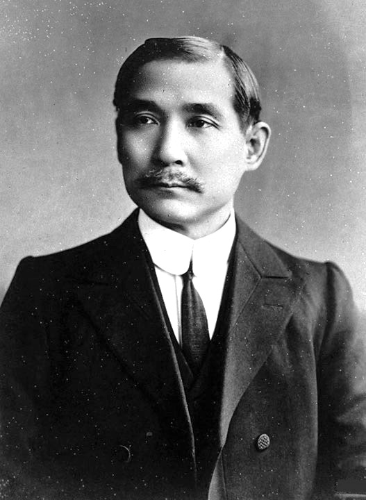
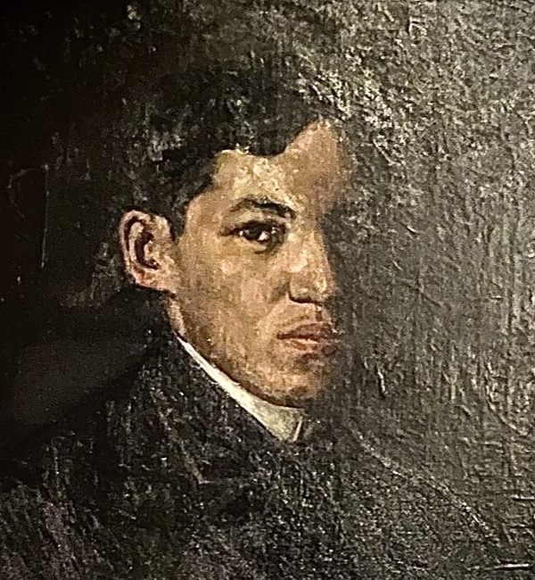
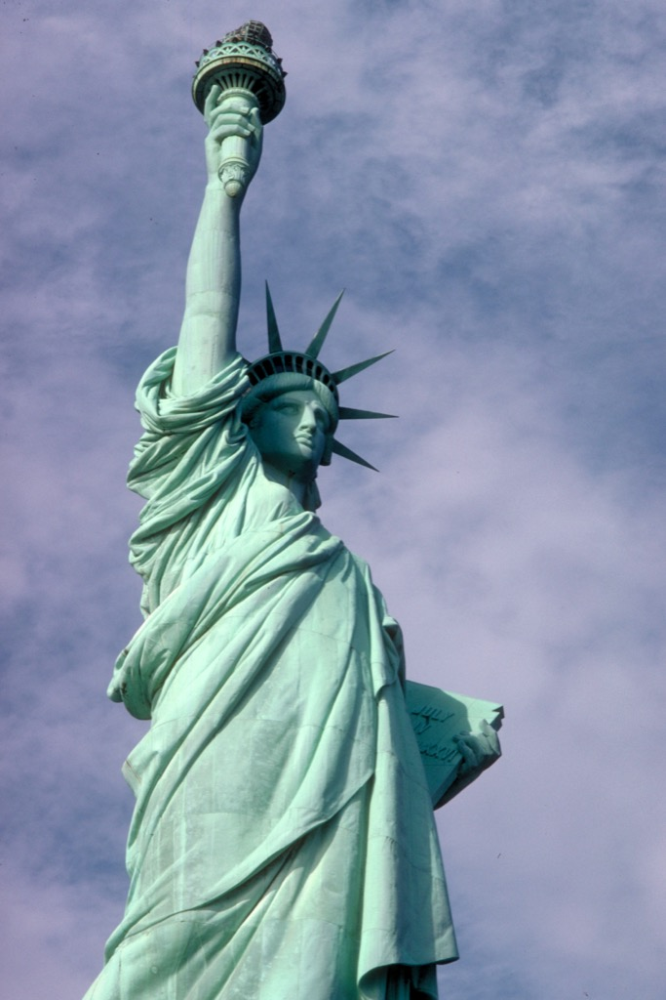

Who is shown in this portrait?

- Abraham Lincoln
- Ulysses S. Grant
- Andrew Johnson
- William T. Sherman
Library of Congress Prints and Photographs Division. No known restrictions.
Regenerated after the tighter Rizal crop. Review at approximately a 390px gameplay width with a 250px bounded image surface. Correct choices are not marked here.

Library of Congress Prints and Photographs Division. No known restrictions.

B.F. Smith & Son, via Library of Congress. No known restrictions.

Herbert Rose Barraud, 1881, via Wikimedia Commons. Public Domain Mark 1.0.

Shanghai Tongsheng Photography Studio, via Wikimedia Commons. Public Domain Mark 1.0.

Portrait of José Rizal, 1891; photograph by Redenertube via Wikimedia Commons. CC0 1.0 Universal.

National Park Service, via Wikimedia Commons. Public Domain Mark 1.0.